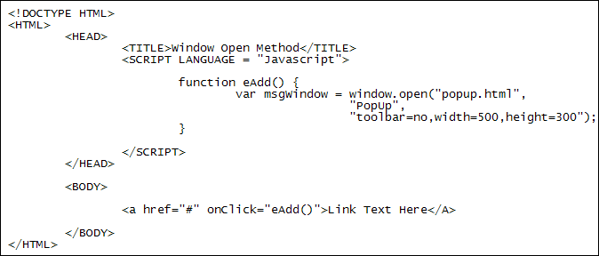

Window Methods and Events
The Window object also has something called Methods. A method is a chunk of code that does a particular job. The alert, confirm, and prompt boxes you have been using are methods. If we were being exact we would have written this:
window.alert("Alert Message")
And this:
window.confirm("OK or Cancel")
But because the Window object is a Global object you don't have to use window "dot" notation. You can just type the part after window. For clarity's sake, though, it's better to keep the window part wherever possible as it's clearer to you what your code means.
Other window methods that are commonly used are these:
window.clearInterval
window.clearTimeout
window.close
window.open
window.print
window.setInterval
window.setTimeout
The first two and the last two or used to set up and manipulate timers. Timers are very useful in animation. We'll explore animation much later. The close and open methods do what you'd expect them to do - close a window and open a new one. The print method brings up an Operating System's print dialogue box. Let's have a look at the window.open method more closely.
window.open
It's quite useful to be able to open up a new window from the current page. For example, we use it on our site for the "contact us" links. The new window then contains things like email address, phone numbers, etc. The new window typically opens when you click a hyperlink on a web page. You can also have a window open when a web page loads, so-called popup windows (which can be very annoying for your visitors).
The code below illustrates how to open up a new window when a hyperlink is clicked. Don't worry about understanding this code yet, as it's a bit complicated at this stage of your programming career. But it uses something called a function. The function is called into action when the hyperlink is clicked. You'll study functions later in this course. Here's the code, though:

That part that opens and configures the new window is this (it's only on three lines above so as to fit on the page):
window.open("popup.html", "PopUp", "toolbar=no,width=500,height=300");
In between the round brackets of open are three thing: the page you want to appear in your new window (popup.html for us), then a name for your new window (PopUp, but it can be just about anything you want), and finally the configuration options for the window. We have three configuration options: one to set the toolbar to no, one to set the width of the window, and one to set the height. All the configuration options go between a set of quotation marks, with no spaces between each option and its value. All three options are separated by commas.
Here are some more configuration options you can have:
left - the left position of the window in pixels
top - the top position of the window in pixels
height - height of the window's viewing area. Minimun height is 100 pixels
width - width of the window viewing area. Minimun width is 100 pixels
menubar - gets you the File, Edit, View, etc, menus at the top.
toolbar - gets you the standard toolbar: back, forward arrows, etc
location - gets you the Address bar, to type web address in
scrollbars - gets you scroll horizontal and vertical scroll bars
If you don't list a feature above then it is turned off by default. In our code above, we didn't need to say "toolbar=no" because "no" is the default.
window.alert, window.confirm, window.prompt
You have already used these dialogue boxes. But just take note of the fact they
are methods of the window object
Window Events
When we opened a new window above, we did so from a hyperlink between the two BODY tags. The hyperlink text was this:
<a href="#" onClick="eAdd()">Link Text Here</A>
The onClick part is something called an event. Lots of other objects between the two BODY tags can use the onClick event. For example, a button on a form, check boxes, drop-down lists, images - in fact, just about anything between the BODY tags. But the idea is to call some Javascript code into action when the event takes place.
There are lots of window events you can use. You can probably guess what most of them are used for.
onChange
onClose
onKeydown
onKeypress
onKeyup
onLoad
onMousedown
onMousemove
onMouseout
onMouseover
onMouseup
onScroll
onSelect
onSubmit
onUnload
We won't go through the whole list just yet, but you'll meet quite a few of these events throughout this course.
Coming up next, we'll take a look at a crucial window object called Document.